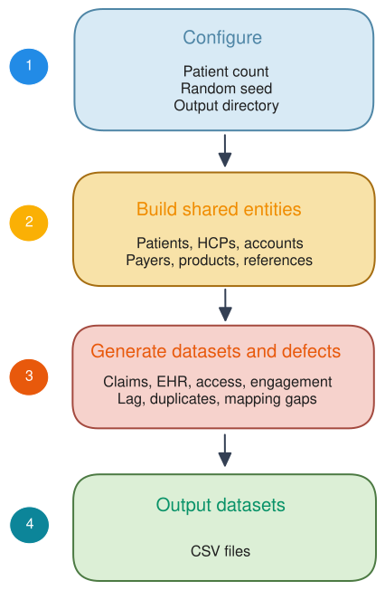
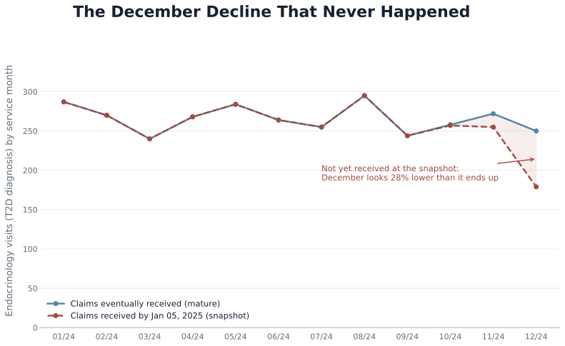
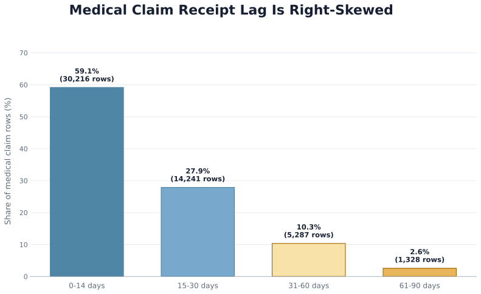
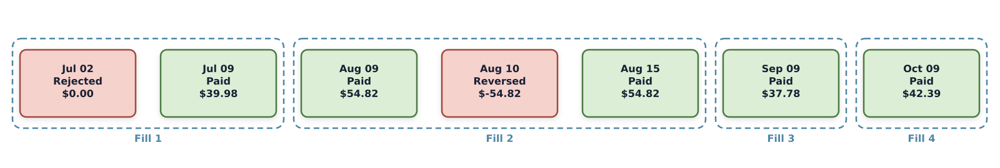

Chapter 3: A Synthetic Lab for Real Pharma Questions
It is your first Monday on the Roventra brand marketing team. The brand director stops by before your coffee is finished: "Endocrinology visits for T2D patients are down nearly a third in December. We need to confirm the number by noon. Can you check the data?"
(For readers unfamiliar with the terms: Type 2 diabetes, or T2D, is the most common form of diabetes and Roventra's target indication; endocrinologists are the specialist physicians who manage it, and their patient visit volume is a key signal of market activity for a T2D drug.)
You run your SQL or Python code, pull the medical claims table, filter to endocrinology visits with a Type 2 diabetes diagnosis code, and count by service month.
service_month patient_count
2024-09 244
2024-10 257
2024-11 255
2024-12 179
December really does sit about 30% below November. The number checks out. You are one click away from forwarding the chart when a colleague glances over and asks a single question: "Received through when?"
Nothing went wrong in December. The claims had not all arrived yet. Medical claims take days to months to flow from the point of care into your company's claims warehouse, so a recent month is always incomplete at any snapshot date. You will see exactly this trap in Python code: generate a dataset with a known receipt pattern, count claims as if they were complete, then measure how wrong your count was. The fix is not to wait longer. It is to use a maturity rule that decides how many days each month needs.
That is the learning pattern for the whole chapter. Pharmaceutical decisions rarely rest on one clean dataset. Claims tables record billed transactions. EHR feeds show what was ordered clinically. Formulary files list current and historical coverage rules. CRM logs show that a rep sent an email. Each source was built to answer a different operational question: billing, clinical care, access management, or field reporting. Because they answer different questions, they observe at different levels of detail (a claim is one transaction; a sales call is one interaction), with different delays (minutes for digital events, weeks for medical claims). This chapter teaches you to read each source in code and identify what it can answer versus what it cannot.
Real patient-level and company data are expensive, licensed, confidential, or restricted to controlled environments. So we will build the warehouse ourselves: a transparent synthetic dataset whose records are fictional but whose structures, identifiers, time relationships, missingness, and deliberately planted defects behave like the real thing. You will generate the dataset, measure the maturity gap in medical claims, query each record type (claims, EHR, formulary, CRM, and public CMS data) with real examples, and run data-quality checks on all of them.
By the end of this chapter you will be able to:
- Recognize when claims are too recent to count, and count only the ones you trust
- Follow one patient's treatment from EHR order through specialty pharmacy approval to paid pharmacy fills
- Define a "completed fill" by grouping transactions and checking the final status, not by counting rows
- Find the payer's coverage rule from the month when a claim was submitted, not from today's rule
- Audit any table you inherit: what it really counts, what it misses
3.1 The Pharmaceutical Data Landscape
Pharmaceutical analysis relies on data created by different parts of the healthcare system. Licensed claims and EHR feeds from vendors such as IQVIA, Komodo Health, and Symphony Health capture diagnosis, treatment, and dispensing events at the patient level. Company records add additional context: CRM captures field-rep calls and account plans. Table 3A.1 in Appendix 3A lists vendor sources, internal equivalents, and public or open-source data for each type.
These records describe patients, HCPs, accounts, payers, products, and interactions over time. Connecting them is harder than it looks: a patient sees several professionals, an HCP works at several locations, and affiliations, payer policies, and product status all change, so the links between entities need keys as well as effective dates. It is important to understand what each row represents, what time period it covers, and which identifiers are safe to join on.
Production patient links often rely on privacy-preserving tokenization. Each data supplier runs certified software that converts identifying fields (such as name, birth date, sex, zip code, and address fragments) into an irreversible token. Vendors such as Datavant and HealthVerity operate token ecosystems that support cross-source matching without exposing those identifiers. Match quality varies, so false merges and false splits can occur.
The single most-used commercial dataset in pharma is the prescription sales feed (weekly TRx and NRx counts by prescriber or geography, such as IQVIA Xponent or Komodo Healthcare Map).
3.2 From Restricted to Synthetic Data
Patient-level healthcare data remain sensitive even after names and addresses are removed. Dates, locations, rare conditions, and provider relationships taken together can still re-identify a person. Public datasets avoid some barriers but cannot reproduce what exists inside a company. No public source links patient journeys to payer access, HCP engagement, field activity, account plans, and patient-support cases.
This book therefore fills the gaps with a transparent, rule-based simulation using fictional patients, HCPs, accounts, payers, products, and operational events. Because the rules are codified in plain Python, you can read, inspect, and change every assumption.
Table 3.2 below groups the synthetic records by the question they support. The full file inventory and field reference are in Appendix 3A.
Table 3.2. Synthetic datasets and their roles in later chapters.
| Included synthetic datasets | What the simulation preserves | Later chapter use |
|---|---|---|
| Claims, EHR, specialty pharmacy | Diagnosis, treatment intent, access, dispensing | Patient populations, journeys, persistence |
| Providers, accounts, CRM, digital | Customer attributes and recorded engagement | HCP targeting, omnichannel analysis, next best action |
| Payers, formulary status and history | Coverage rules and changes over time | Reachable opportunity and access barriers |
| Open Payments, Medicare Part D | Public aggregate HCP and prescribing patterns | Transparency and external benchmarks |
3.3 Generate the Synthetic Data Sets
Now let's build the warehouse. Executable commands are in ch03_data/scripts/. Run the code blocks in this chapter in order, or open chapter3_walkthrough.ipynb to execute them as a notebook.
Set up the environment once from the project root (not from the ch03_data/ directory):
uv sync
This creates the project environment and installs the pinned dependencies.
Then generate the datasets:
uv run python ch03_data/scripts/generate_all_synthetic_data.py
After a few seconds you should see:
Generating data for 20,000 patients, 250 accounts, 666 providers...
Formulary change events: 21
Launch treatment attempts: 6,239
Medical claims: 51,083
Pharmacy claims: 56,556
SP events: 6,019
EHR events: 150,230
CRM interactions: 3,395
Territory alignment records: 8
Digital events: 1,140
Open Payments records: 816
CMS Part D records: 1,030
Done. Data written to .../ch03_data/output_data/generated_data
If you use the default seed (20260609), you should see the exact counts listed above. Figure 3.1 shows the four stages the generator runs to produce the datasets.

Figure 3.1. Synthetic data generation pipeline.
The output tree separates three kinds of data so they cannot contaminate each other:
output_data/generated_data/: synthetic records from the generatoroutput_data/public_reference/: downloaded public extractsoutput_data/analysis_results/: everything derived by analysis scripts
The default run contains 20,000 fictional patients, 51,083 medical claims, 56,556 pharmacy transactions, 150,230 EHR events, and linked access, engagement, support, and public-reference records.
Before writing the maturity query, inspect the two files it will use. First, the medical claims table:
mc = pd.read_csv("ch03_data/output_data/generated_data/claims_medical/medical_claims.csv")
print(mc.columns.tolist())
['medical_claim_id', 'patient_id', 'claim_date', 'claim_received_date',
'claim_type', 'claim_status', 'icd10_code', 'icd10_description', 'procedure_code',
'place_of_service', 'hcp_id', 'account_id', 'payer_id',
'allowed_amount', 'paid_amount', 'is_duplicate']
cols = ["medical_claim_id", "claim_date", "claim_received_date",
"icd10_code", "icd10_description", "hcp_id", "is_duplicate"]
print(mc[cols].head(5).to_string(index=False))
medical_claim_id claim_date claim_received_date icd10_code icd10_description hcp_id is_duplicate
MC0000001 2024-03-27 2024-04-12 M06.9 Rheumatoid arthritis, unspecified HCP0496 False
MC0000002 2024-11-08 2024-11-21 I10 Essential hypertension HCP0162 False
MC0000003 2024-12-17 2025-01-14 I50.9 Heart failure, unspecified HCP0162 False
MC0000004 2024-09-01 2024-10-09 I50.9 Heart failure, unspecified HCP0162 False
MC0000005 2024-10-19 2024-11-08 E11.9 Type 2 diabetes mellitus without complications HCP0245 False
claim_date is when the service occurred. claim_received_date is when the claim landed in the warehouse. icd10_code identifies the diagnosis; hcp_id identifies the billing provider; is_duplicate flags planted duplicate rows. Receipt lag is not stored as a column; derive it: (mc["claim_received_date"] - mc["claim_date"]).dt.days.
Next, the provider reference table:
prov = pd.read_csv("ch03_data/output_data/generated_data/reference/providers.csv")
print(prov.columns.tolist())
['hcp_id', 'provider_name', 'specialty', 'npi_taxonomy_code', 'account_id', 'territory', 'state', 'region', 'npi_synthetic']
print(prov[["hcp_id", "specialty", "state"]].head(5).to_string(index=False))
hcp_id specialty state
HCP0001 Pulmonology IL
HCP0002 Primary Care FL
HCP0003 Endocrinology MI
HCP0004 Oncology CA
HCP0005 Pulmonology OH
The join key between the two files is hcp_id. The specialty column isolates endocrinology providers from the rest.
Now let's recreate the chapter opening. It is January 5, 2025. You filter to endocrinology visits with a Type 2 diabetes diagnosis (ICD-10 E11.x) and count by service month. Your warehouse contains only what has arrived by that date.
providers = pd.read_csv(
"ch03_data/output_data/generated_data/reference/providers.csv"
)
endo_ids = providers.loc[providers.specialty.eq("Endocrinology"), "hcp_id"]
mc = pd.read_csv(
"ch03_data/output_data/generated_data/claims_medical/medical_claims.csv",
parse_dates=["claim_date", "claim_received_date"],
)
mc = mc[
~mc.is_duplicate
& mc.claim_date.dt.year.eq(2024)
& mc.icd10_code.str.startswith("E11")
& mc.hcp_id.isin(endo_ids)
]
month = mc.claim_date.dt.to_period("M").astype(str).rename("service_month")
snapshot = month[mc.claim_received_date.le("2025-01-05")].value_counts().sort_index()
mature = month.value_counts().sort_index()
view = pd.DataFrame({"snapshot_jan05": snapshot, "eventually": mature})
view["completeness_%"] = (100 * view.snapshot_jan05 / view.eventually).round(1)
print(view.tail(4).to_string())
snapshot_jan05 eventually completeness_%
service_month
2024-09 244 244 100.0
2024-10 257 258 99.6
2024-11 255 272 93.8
2024-12 179 250 71.6
There is your crisis: at the January 5 snapshot, December shows 179 endocrinology T2D visits against November's 255, an apparent drop of nearly 30%. The eventually column is the truth: 250 December visits arrive in full, in line with every other month. December was not down; 28.4% of its claims had not arrived yet. Figure 3.2 shows this comparison as a chart.

Figure 3.2. The January 5 snapshot makes December appear 28.4% lower than it eventually turns out to be. The gap is receipt lag, not a real decline.
The distribution behind that gap tells you how long to wait. Compute it directly from the receipt date and service date:
mc = pd.read_csv(
"ch03_data/output_data/generated_data/claims_medical/medical_claims.csv",
parse_dates=["claim_date", "claim_received_date"],
)
lag = (mc["claim_received_date"] - mc["claim_date"]).dt.days
buckets = pd.cut(
lag,
bins=[0, 14, 30, 60, 90],
labels=["0–14 days", "15–30 days", "31–60 days", "61–90 days"],
include_lowest=True,
)
result = buckets.value_counts(sort=False).rename("claims").to_frame()
result["pct"] = (100 * result["claims"] / len(mc)).round(1)
print(result.to_string())
claims pct
0–14 days 30216 59.2
15–30 days 14241 27.9
31–60 days 5287 10.3
61–90 days 1328 2.6
Figure 3.3 shows the shape. The long right tail is what makes a recent month look so wrong in a snapshot: 59% of claims arrive within two weeks, but the remaining 41% trickle in over the next two months.

Figure 3.3. Medical claim receipt lag in the default run. Most claims arrive quickly; the long tail drives the December illusion in Figure 3.2.
Set a maturity cutoff from this distribution (for example, exclude any service month whose claims are less than 90% complete) and label the months that have not cleared it as incomplete rather than treating them as final.
With the maturity trap demonstrated, move to the record-level story. The same question about as-of completeness applies at the patient level: a treatment attempt can look abandoned in the snapshot when it is simply delayed. PAT02034 shows why.
3.4 Six Tables, Each Built for a Different Purpose
This section asks one question per source and uses a single fictional patient to make the answers concrete. Meet PAT02034: a generated female patient, 50-64 years old, in New Jersey, managed by HCP0280 (an Endocrinologist at ACC089) under commercial payer PAY002.
Her case runs through chapters. Chapter 2 showed the first rejected Roventra claim and the payer's new-to-market review process. Here you trace the full treatment attempt across six source types, derive the completed fills in code, and select the formulary rule that applied on the event date. The six sources and the question each one answers for this patient are:
| Source | Question |
|---|---|
| Medical claims | What does PAT02034's billing record show about her care? |
| Pharmacy claims | How many fills did she actually complete? |
| Formulary | What payer rules applied in the month of her first fill? |
| EHR | What clinical detail does the chart add that claims cannot see? |
| CRM and digital | Can we find the patient this field call was about? |
| Medicare Part D | Who are the highest-volume Roventra prescribers? |
(A complete field reference for every table in this section is in Appendix 3A.)
Now look at each source in detail.
3.4.1 Medical claims: what does PAT02034's billing record show?
Medical claims record what providers billed to the payer: the diagnosis code, procedure code, place of service, claim status, and paid amount. You already used medical claims at the population level in §3.3 to show the receipt lag; here you zoom into the same table for a single patient.
One vocabulary clarification before the query: this schema has no separate service_date column. The field claim_date is the date of service (the day the encounter happened). The field claim_received_date is when the payer received and adjudicated the submission. The gap between them is the receipt lag from §3.3; derive it on the fly rather than expecting it as a stored column.
mc = pd.read_csv(
"ch03_data/output_data/generated_data/claims_medical/medical_claims.csv",
parse_dates=["claim_date", "claim_received_date"],
)
mc["claim_lag_days"] = (mc.claim_received_date - mc.claim_date).dt.days
cols = ["medical_claim_id", "claim_date", "claim_received_date", "claim_lag_days",
"icd10_code", "icd10_description", "claim_type", "place_of_service",
"claim_status", "hcp_id", "paid_amount"]
pat_mc = mc.loc[mc.patient_id.eq("PAT02034") & ~mc.is_duplicate, cols].sort_values("claim_date")
print(pat_mc.to_string(index=False))
medical_claim_id claim_date claim_received_date claim_lag_days icd10_code icd10_description claim_type place_of_service claim_status hcp_id paid_amount
MC0005114 2024-05-28 2024-06-02 5 E11.9 Type 2 diabetes mellitus without complications Professional Telehealth Denied HCP0280 729
MC0005113 2024-07-20 2024-07-28 8 E11.9 Type 2 diabetes mellitus without complications Institutional Telehealth Paid HCP0280 451
Two claims, both coded E11.9 (Type 2 diabetes), both with HCP0280. The May claim is a professional claim that was denied by PAY002; the July claim is institutional and paid. Both are telehealth encounters.
3.4.2 Pharmacy claims: how many fills did PAT02034 actually complete?
rx = pd.read_csv("ch03_data/output_data/generated_data/claims_pharmacy/pharmacy_claims.csv",
dtype={"ndc": str})
ndc = pd.read_csv("ch03_data/output_data/generated_data/reference/ndc_codes.csv",
dtype={"NDC": str})
# Drug name is not in the claims file; derive it by joining the NDC reference.
rx = rx.merge(
ndc[["NDC", "CUI_L1_NAME"]].rename(columns={"NDC": "ndc", "CUI_L1_NAME": "drug_name"}),
on="ndc", how="left",
)
pat = rx.loc[rx.patient_id.eq("PAT02034") & rx.drug_name.eq("Roventra")]
cols = ["rx_claim_id", "fill_date", "drug_name", "status",
"prescription_number", "fill_number", "reject_reason", "patient_pay"]
print(pat[cols].to_string(index=False))
rx_claim_id fill_date drug_name status prescription_number fill_number reject_reason patient_pay
RX0005537 2024-07-02 Roventra Rejected RXP0002415 0 New-to-market review; exception documentation required 0.00
RX0005538 2024-07-09 Roventra Paid RXP0002415 0 NaN 45.06
RX0005539 2024-08-09 Roventra Paid RXP0002415 1 NaN 64.88
RX0005540 2024-08-10 Roventra Reversed RXP0002415 1 NaN -64.88
RX0005541 2024-08-15 Roventra Paid RXP0002415 1 NaN 64.88
RX0005542 2024-09-09 Roventra Paid RXP0002415 2 NaN 45.13
RX0005543 2024-10-09 Roventra Paid RXP0002415 3 NaN 59.90
Seven rows. The answer is not 7 (all rows), not 5 (paid rows), and not 6 (non-rejected rows). The correct answer is four completed fills. Derive it:
Listing 3.4: Derive completed fills from prescription groups
rx = pd.read_csv("ch03_data/output_data/generated_data/claims_pharmacy/pharmacy_claims.csv",
dtype={"ndc": str})
ndc = pd.read_csv("ch03_data/output_data/generated_data/reference/ndc_codes.csv",
dtype={"NDC": str})
rx = rx.merge(
ndc[["NDC", "CUI_L1_NAME"]].rename(columns={"NDC": "ndc", "CUI_L1_NAME": "drug_name"}),
on="ndc", how="left",
)
pat = rx.loc[rx.patient_id.eq("PAT02034") & rx.drug_name.eq("Roventra")].copy()
chains = (
pat.sort_values(["fill_date", "rx_claim_id"])
.groupby(["prescription_number", "fill_number"], sort=False)
.agg(
first_date=("fill_date", "first"),
statuses=("status", " -> ".join),
net_patient_pay=("patient_pay", "sum"),
)
.reset_index()
)
chains["completed_fill"] = (
chains.statuses.str.endswith("Paid") & chains.net_patient_pay.gt(0)
)
print(chains.to_string(index=False))
print(f"completed_fills={int(chains.completed_fill.sum())}")
prescription_number fill_number first_date statuses net_patient_pay completed_fill
RXP0002415 0 2024-07-02 Rejected -> Paid 45.06 True
RXP0002415 1 2024-08-09 Paid -> Reversed -> Paid 64.88 True
RXP0002415 2 2024-09-09 Paid 45.13 True
RXP0002415 3 2024-10-09 Paid 59.90 True
completed_fills=4
The (prescription_number, fill_number) pair is the unit of work. prescription_number is a real NCPDP field (402-D2): the pharmacy assigns it once, and every transaction for that prescription (original fill and all refills) carries it. fill_number (NCPDP field 403-D3) starts at 0 for the original dispense and increments with each refill. Grouping by (prescription_number, fill_number) isolates all transactions belonging to one fill attempt: the July rejection and resubmission both carry fill_number 0; the August paid claim, its reversal, and the corrected resubmission all share fill_number 1. In real pharmacy claim streams these two fields are transmitted with every transaction; no heuristic reconstruction is needed.
Counting rows gives 7 and counting paid rows gives 5, while grouping by fill gives 4 completed fills.
Medical claims use different vocabulary: one billed encounter per row, with diagnosis and procedure codes, care setting, provider, account, payer, status, and amounts. Production claims arrive as multi-segment submissions (header plus service lines); the synthetic file keeps a one-row simplification. Figure 3.5 shows the 4 prescription fills directly.

Figure 3.5. Preserve the transaction chain, then count completed groups rather than rows or paid statuses.
Coverage dates in patients.csv define when a patient is observable. An apparent treatment gap may be discontinuation, or the data may have lost sight of the patient when they switched payers or left the contributing health system. Every persistence measure starts from coverage periods, not event counts.
One vocabulary distinction that the industry uses constantly: real-world data (RWD) are the records themselves, created during care delivery, payment, and operations. Real-world evidence (RWE) is a conclusion produced by analyzing those records under a defined question, population, comparison, outcome, and time window. No raw claim identifies a "line of therapy"; classifying patients into lines requires explicit rules for index dates, gap definitions, switches, and discontinuation.
3.4.3 Formulary and access: what rules applied to PAT02034 in July?
The package keeps a current-status table (formulary_status.csv) and a change-event table (formulary_history.csv). Start with PAT02034's payer:
patients = pd.read_csv("ch03_data/output_data/generated_data/reference/patients.csv")
fs = pd.read_csv("ch03_data/output_data/generated_data/formulary/formulary_status.csv")
fh = pd.read_csv("ch03_data/output_data/generated_data/formulary/formulary_history.csv")
payer = patients.loc[patients.patient_id.eq("PAT02034"), "payer_id"].iloc[0]
cols = ["plan_id", "plan_name", "tier", "prior_authorization",
"step_therapy", "quantity_limit", "specialty_pharmacy"]
status = fs.loc[fs.plan_id.eq(payer) & fs.product_name.eq("Roventra"), cols]
changes = fh.loc[fh.plan_id.eq(payer) & fh.product_name.eq("Roventra")]
print(status.to_string(index=False))
print(f"Roventra change events for {payer}: {len(changes)}")
plan_id plan_name tier prior_authorization step_therapy quantity_limit specialty_pharmacy
PAY002 South Commercial Plan 2 Specialty Yes Yes Yes Yes
Roventra change events for PAY002: 0
PAT02034's July fill was subject to prior authorization, specialty-pharmacy routing, step therapy, and a quantity limit. The pharmacy row adds the event-specific reason that the status table cannot supply: PAY002's interim new-to-market review required a clinical exception. The history table has no later Roventra change for PAY002, so the generated current restrictions remain stable after that launch-period exception.
That final point hides an important concept. Reading current formulary status answers "what are the rules today?" but a claim from six months ago may have been adjudicated under a different rule. The current status table cannot answer what the rule was in July unless you also read the history. PAY002 happens to have no Roventra changes, so current equals July. PAY001 (Northeast Commercial Plan 1) is more interesting.
Listing 3.5: Join a claim to the payer rule active on its date
fh = pd.read_csv("ch03_data/output_data/generated_data/formulary/formulary_history.csv",
parse_dates=["effective_date"])
fs = pd.read_csv("ch03_data/output_data/generated_data/formulary/formulary_status.csv")
# PAY001 moved Roventra from Tier 3 to Tier 1 on 2024-04-01.
pay001_hist = fh.loc[fh.plan_id.eq("PAY001") & fh.product_name.eq("Roventra")].sort_values("effective_date")
print("PAY001 Roventra change history:")
print(pay001_hist[["effective_date","prior_tier","new_tier"]].to_string(index=False))
print()
# Reconstruct the quarterly state from the initial state and change events.
initial_tier = pay001_hist.iloc[0]["prior_tier"]
initial_pa = pay001_hist.iloc[0]["prior_prior_authorization"]
states = [{"effective_date": pd.Timestamp("2024-01-01"),
"tier": initial_tier, "prior_authorization": initial_pa}]
for _, row in pay001_hist.iterrows():
states.append({"effective_date": row["effective_date"],
"tier": row["new_tier"], "prior_authorization": row["new_prior_authorization"]})
state_df = pd.DataFrame(states)
def rule_on(event_date: str) -> dict:
dt = pd.Timestamp(event_date)
return state_df.loc[state_df.effective_date.le(dt)].iloc[-1].to_dict()
for date in ["2024-02-15", "2024-06-01"]:
r = rule_on(date)
print(f"{date}: tier={r['tier']}, PA={r['prior_authorization']}")
print()
print("Current formulary status for PAY001/Roventra:")
print(fs.loc[fs.plan_id.eq("PAY001") & fs.product_name.eq("Roventra"),
["tier","prior_authorization","step_therapy"]].to_string(index=False))
PAY001 Roventra change history:
effective_date prior_tier new_tier
2024-04-01 Tier 3 Tier 1
2024-02-15: tier=Tier 3, PA=Yes
2024-06-01: tier=Tier 1, PA=Yes
Current formulary status for PAY001/Roventra:
tier prior_authorization step_therapy
Tier 1 Yes Yes
A Q1 claim for a PAY001 patient faced Tier 3 access with prior authorization. The same patient's Q2 claim faced Tier 1, the preferred position. Reading only the current status table, you would answer every historical question as if the product were always Tier 1, which overstates access in the launch quarter. The rule is simple: join each event to the formulary record whose effective_date is at or before the event date.
Exercise 2 uses this pattern to measure whether the tier change moved rejection rates.
3.4.4 EHR: what does the chart add that claims cannot see?
Claims show that PAT02034's care was billed. Her EHR rows show what was happening clinically:
ehr = pd.read_csv("ch03_data/output_data/generated_data/ehr/ehr_events.csv")
cols = ["event_date", "event_type", "event_name", "lab_value",
"lab_abnormal_flag", "problem_list_codes", "medication_orders"]
rows = ehr.loc[ehr.patient_id.eq("PAT02034"), cols].sort_values("event_date")
print(rows.to_string(index=False))
event_date event_type event_name lab_value lab_abnormal_flag problem_list_codes medication_orders
2024-03-07 Encounter Office visit NaN NaN E11.40|E11.9 Metformin 1000 mg oral BID
2024-06-12 Encounter Specialist visit NaN NaN E11.40|E11.65 Roventra 10 mg oral daily
2024-06-13 Lab A1C 10.6 H NaN NaN
2024-06-22 Lab A1C 8.9 H NaN NaN
2024-12-27 Encounter Care coordination NaN NaN E11.40|E11.65 Roventra 20 mg oral daily|Atorvastatin 40 mg oral daily
2024-12-30 Lab LDL 170.0 H NaN NaN
2025-01-01 Lab A1C 8.4 H NaN NaN
The claims story now has a clinical spine: diabetes is on the problem list in March, then by mid-June Roventra appears in the medication orders and the A1C is elevated at 10.6%, still high at 8.9% nine days later. The first paid Roventra transaction appears on July 9, and the specialty pharmacy ships on July 10. The December and January records show later clinical follow-up, reflected in Figure 3.4's EHR lane.
Each field carries a caution worth stating explicitly. Problem lists summarize conditions documented as active; they are useful for comorbidity definitions but often stale or incomplete. A medication order records treatment intent. Pharmacy claims record observed dispensing: a Roventra order in June becomes a paid fill in July, and the gap is the access and fulfillment process you can trace in the SP and claims tables. Laboratory abnormal flags (H/L) are crude range comparisons, fine for screening and quality checks; analytical patient groups need value thresholds defined before the query runs, applied to the numeric lab_value column rather than the instrument's abnormal flag. An EHR feed sees only the contributing health system; patients do not stop existing when they leave a network.
3.4.5 CRM and digital: find the patient this call was about
This is the most important negative result in the chapter. Try it:
crm = pd.read_csv("ch03_data/output_data/generated_data/crm_veeva/crm_interactions.csv")
print(list(crm.columns))
cols = ["interaction_date", "channel", "message_topic", "hcp_id", "account_id"]
context = crm.loc[
crm.hcp_id.eq("HCP0280") & crm.product_name.eq("Roventra"), cols
].sort_values("interaction_date")
print(context.to_string(index=False))
['crm_interaction_id', 'interaction_date', 'rep_id', 'hcp_id', 'account_id',
'territory', 'product_name', 'channel', 'message_topic', 'outcome',
'duration_min', 'sample_drops', 'consent_status', 'next_action']
interaction_date channel message_topic hcp_id account_id
2024-09-18 Email Competitive differentiation HCP0280 ACC089
There is no patient_id in this table. A CRM row records that a company representative logged an interaction with an HCP or account: a call, email, virtual meeting, speaker program, or sample drop, with a message topic, a reported outcome, and consent status. This table is keyed to HCPs and accounts, so patient-level attribution is outside its permitted grain. PAT02034's prescriber HCP0280 appears in CRM, but no record links field activity to an identified patient, and analyses must not attempt that join. This is both a privacy boundary and an analytical one.
Read the fields with appropriate suspicion: a logged call does not prove the message landed; outcome = "Positive" is a rep's operational label, not a clinical result; sample_drops records units left behind, not treatment started. The measurement chapters later in the book live entirely in the gap between activity, engagement, and incremental effect.
Alongside CRM sit digital_engagement.csv (HCP-level email, webinar, web, and content events with open, click, and attendance flags; observable engagement, not prescribing intent) and territory_alignment.csv (one row per sales region: rep, aligned accounts and HCPs, workload targets). The alignment table links field capacity to the account and HCP universe used in targeting analyses.
3.4.6 Medicare Part D: who are the highest-volume Roventra prescribers?
This is the fifth source and the fifth question. The synthetic cms_part_d/prescriber_summary.csv mimics the public CMS file's grain: one row per prescriber, drug, and year, with claims, beneficiaries, days supply, and cost. Ask for the highest-volume Roventra prescribers:
partd = pd.read_csv("ch03_data/output_data/generated_data/cms_part_d/prescriber_summary.csv")
cols = ["prscrbr_npi", "prscrbr_type", "prscrbr_city", "prscrbr_state_abrvtn",
"tot_clms", "tot_benes", "tot_drug_cst"]
top = (
partd.loc[partd.drug_name.eq("Roventra"), cols]
.sort_values(["tot_clms", "tot_benes"], ascending=[False, False])
.head(5)
)
print(top.to_string(index=False))
prscrbr_npi prscrbr_type prscrbr_city prscrbr_state_abrvtn tot_clms tot_benes tot_drug_cst
HCP0420 Rheumatology TX City TX 300 256 273837.90
HCP0353 Cardiology FL City FL 298 144 94005.46
HCP0060 Rheumatology GA City GA 298 110 91179.53
HCP0635 Endocrinology FL City FL 296 247 69255.49
HCP0019 Pulmonology WA City WA 295 127 200619.60
This table is useful for ranking and benchmarking: specialty, geography, relative volume, and how many beneficiaries contributed to an annual total. The absences matter more than the fields: no patient journeys, no switching, no payer, no eligibility window, no dates inside the year, and no reason a physician wrote more or less. A high-volume prescriber here can be an important account target, but the table alone cannot explain why. The package carries both the synthetic version and the real downloaded extract in public_reference/. The data_source label exists so they are never treated as equivalent evidence.
3.5 Data Quality Checks and Cleaning
Pharmaceutical claims data routinely arrive with four categories of data quality issues: duplicate rows, receipt lag, unmapped reference codes, and conflicting provider attributes. The generator plants controlled examples of all four at realistic rates. Receipt lag was already measured in §3.3; the remaining three are each demonstrated below with the detection method and the correction.
3.5.1 Duplicate medical claims
Why duplicates happen. In medical claims, the same service can appear twice with different claim IDs. The three most common causes in production feeds: (1) a provider resubmits after an initial rejection and the payer later reverses the rejection and processes both copies; (2) claims clearinghouses resend without acknowledgment and both transmissions land in the warehouse; (3) commercial data vendors aggregate from hundreds of payers and their own deduplication runs on a delay, so an early extract contains the original before the vendor removes it. None of these arrive with a warning. The duplicate is an ordinary new row.
Here is what a planted duplicate looks like in the raw CSV:
| medical_claim_id | patient_id | claim_date | claim_received_date | icd10_code | procedure_code | hcp_id | paid_amount | is_duplicate |
|---|---|---|---|---|---|---|---|---|
| MC0000090 | PAT00035 | 2024-12-11 | 2024-12-16 | E11.9 | 96413 | HCP0308 | 681 | False |
| MC0050428 | PAT00035 | 2024-12-11 | 2024-12-21 | E11.9 | 96413 | HCP0308 | 681 | True |
Every clinical key matches. The only differences are the claim ID (fresh, auto-assigned) and the five-day gap in receipt date. Nothing about the second row labels itself a duplicate; the six-column key does. In production the is_duplicate column does not exist; you are left with just the keys.
Detect, then fix. Measure the scope first; then drop the extras before any utilization count:
Listing 3.5: Detect and remove duplicate medical claims
mc = pd.read_csv("ch03_data/output_data/generated_data/claims_medical/medical_claims.csv")
keys = ["patient_id", "claim_date", "icd10_code", "procedure_code", "hcp_id", "paid_amount"]
detected = mc.duplicated(subset=keys, keep="first").sum()
flagged = mc.is_duplicate.sum()
print(f"rows={len(mc):,} detected_by_keys={detected:,} answer_key={flagged:,}")
print(f"naive count overstates utilization by {100*flagged/(len(mc)-flagged):.2f}%")
# Fix: keep only the first occurrence of each unique clinical key
mc_clean = mc.loc[~mc.duplicated(subset=keys, keep="first")].copy()
print(f"\nbefore: {len(mc):,} → after: {len(mc_clean):,} ({len(mc)-len(mc_clean):,} removed)")
rows=51,083 detected_by_keys=1,002 answer_key=1,002
naive count overstates utilization by 2.00%
before: 51,083 → after: 50,081 (1,002 removed)
Key-based detection finds exactly the 1,002 planted duplicates, the same technique you will use in production, verified here against ground truth you will never have in production. Two percent sounds small until it lands in provider profiles, account opportunity ranks, and utilization trends, where a systematic +2% is not noise but bias.
3.5.2 Unrecognized NDC codes
How the NDC join works, and fails. Pharmacy claims carry only the NDC (National Drug Code), an 11-digit identifier for a specific manufacturer, formulation, and package size. Drug name does not live in the claims file; analysts derive it by joining to an NDC reference table. That join is a standard 1:1 lookup and works perfectly for every NDC the reference knows about. The failure mode is not a blank field; it is an NDC the reference has never seen.
Three causes are common in production: (1) a new pack size or formulation gets an NDC assigned, claims start flowing the same week, but the reference refresh hasn't run yet; (2) specialty pharmacies sometimes dispense under repackager NDCs that standard drug dictionaries don't include; (3) the NDC format differs between files (hyphenated 90000-1002-11 vs. plain 90000100211), causing the join key to never match.
The generator plants the failure by writing 90000-XXXX-12 NDC codes (new pack-size variants) into ~5% of pharmacy claim rows. Those codes are intentionally absent from ndc_codes.csv.
Here is what the rows look like after a LEFT JOIN to the reference:
| rx_claim_id | fill_date | ndc | drug_name (after join) | status |
|---|---|---|---|---|
| RX0000003 | 2024-07-07 | 90000-1002-11 | Nexoral | Paid |
| RX0000004 | 2024-09-01 | 90000-1002-11 | Nexoral | Paid |
| RX0000005 | 2024-12-09 | 90000-1002-12 | (no match) | Paid |
| RX0000016 | 2024-07-06 | 90000-1002-11 | Nexoral | Paid |
| RX0000022 | 2024-04-08 | 90000-1002-12 | (no match) | Paid |
90000-1002-12 is a new Nexoral pack size. The reference knows 90000-1002-11. The inner join drops the unrecognized rows silently; the LEFT JOIN keeps them as null, making the gap visible.
Detect, then fix. An inner join hides the problem; a LEFT JOIN exposes it:
Listing 3.6: Expose unmapped NDCs with a LEFT JOIN
rx = pd.read_csv("ch03_data/output_data/generated_data/claims_pharmacy/pharmacy_claims.csv",
dtype={"ndc": str})
ndc = pd.read_csv("ch03_data/output_data/generated_data/reference/ndc_codes.csv",
dtype={"NDC": str})
ref = ndc[["NDC", "CUI_L1_NAME"]].rename(columns={"NDC": "ndc", "CUI_L1_NAME": "drug_name"})
paid = rx.loc[rx.status.eq("Paid")].copy()
# Naive inner join: rows with unrecognized NDC silently disappear
naive = paid.merge(ref, on="ndc").groupby("drug_name").size()
print("=== Naive inner join ===")
print(naive.sort_values(ascending=False).to_string())
# Honest left join: every row kept; unmapped NDC surfaced as its own group
left = paid.merge(ref, on="ndc", how="left")
left["drug_name"] = left["drug_name"].fillna("unmapped")
honest = left.groupby("drug_name").size()
print("\n=== LEFT JOIN (honest) ===")
print(honest.sort_values(ascending=False).to_string())
=== Naive inner join ===
drug_name
Roventra 15601
Supportive Med 10024
Vexpro 9835
Nexoral 9704
=== LEFT JOIN (honest) ===
drug_name
Roventra 15601
Supportive Med 10024
Vexpro 9835
Nexoral 9704
unmapped 2321
The known-brand totals are identical in both outputs; the inner join does not undercount any brand's mapped fills. What it does is make 2,321 paid fills (4.8%) disappear without a trace. Those fills have a valid NDC, a real patient, a real payment, and zero representation in the naive table. Market size is wrong, brand share denominators are wrong, and if the unmapped NDCs cluster in a particular channel or payer segment (as often happens with specialty pharmacies), the share bias is not uniform. The LEFT JOIN at least makes the gap visible so you can investigate the unknown NDCs and prioritize a reference update.
3.5.3 Provider specialty and NPI taxonomy conflicts
Why it happens. Every US provider registers an NPI (National Provider Identifier) and self-reports an NPI taxonomy code, a standardized code that describes their provider type. The taxonomy code for Endocrinology is 207RE0101X, Cardiology is 207RC0000X, and so on. In pharma data, the specialty label typically comes from a separate source: the data vendor's own classification, the specialty field submitted on the claim, or the CRM. These two systems (the provider's self-report and the vendor's classification) routinely disagree. Three common causes: (1) a provider registers under a general internal medicine taxonomy and the vendor later reclassifies them as an endocrinologist based on prescribing patterns; (2) a group practice submits claims under a single taxonomy code that doesn't match the billing physicians' individual specialties; (3) the provider simply entered an incorrect code at NPI registration and never corrected it.
Here is what matched and mismatched rows look like in the raw providers.csv:
| hcp_id | specialty | npi_taxonomy_code | expected_taxonomy | status |
|---|---|---|---|---|
| HCP0001 | Pulmonology | 207RP1001X | 207RP1001X | match |
| HCP0002 | Primary Care | 207Q00000X | 207Q00000X | match |
| HCP0045 | Oncology | 363L00000X | 207RX0202X | conflict |
| HCP0104 | Oncology | Unknown | 207RX0202X | missing |
363L00000X is the taxonomy code for a Nurse Practitioner. HCP0045's specialty says Oncology; their self-reported NPI code says something else entirely. If you use npi_taxonomy_code to filter oncologists, HCP0045 disappears from your universe.
Detect, then fix. Map each specialty to its expected taxonomy code, then compare:
Listing 3.7: Detect NPI taxonomy conflicts
import sys
sys.path.insert(0, "ch03_data")
from generation_modules.entities import SPECIALTY_TAXONOMY
providers = pd.read_csv("ch03_data/output_data/generated_data/reference/providers.csv")
providers["expected_taxonomy"] = providers["specialty"].map(SPECIALTY_TAXONOMY)
providers["taxonomy_status"] = "match"
providers.loc[
providers["npi_taxonomy_code"].isin(["", "Unknown"]) |
providers["npi_taxonomy_code"].isna(),
"taxonomy_status",
] = "missing or unknown"
providers.loc[
providers["npi_taxonomy_code"].notna() &
~providers["npi_taxonomy_code"].isin(["", "Unknown"]) &
(providers["npi_taxonomy_code"] != providers["expected_taxonomy"]),
"taxonomy_status",
] = "conflict"
print(providers["taxonomy_status"].value_counts().to_string())
print(f"\nConflict rate: {100*(providers.taxonomy_status != 'match').mean():.2f}%")
# Fix: flag mismatches and use specialty as the source of truth
providers_clean = providers.copy()
providers_clean.loc[
providers_clean["taxonomy_status"] != "match",
"npi_taxonomy_code",
] = providers_clean.loc[
providers_clean["taxonomy_status"] != "match",
"expected_taxonomy",
]
taxonomy_status
match 645
missing or unknown 16
conflict 5
Conflict rate: 3.15%
The fix is a governed decision, not a one-liner: pick the specialty column as the single source of truth, overwrite the npi_taxonomy_code for flagged providers, and document the rule so every downstream analysis uses the same population. For mismatches you cannot resolve automatically (providers whose specialty itself is ambiguous), retain them as a flagged group rather than silently assigning them.
Table 3.3 summarizes all four issues: designed rate, measured result, and correction method.
Table 3.3. Planted defects: designed rate, verified count, and correct handling.
| Issue | Rate designed | Verified result | Correct handling |
|---|---|---|---|
| Claim receipt lag | 2–90 days, median 12 | Median 12 days; Dec snapshot −28.4% vs mature | Derive lag as claim_received_date − claim_date; apply maturity cutoff before reading recent periods |
| Duplicate medical claims | ~2% | 1,002 of 51,083 rows (1.96%) | Detect by claim keys; exclude before counting encounters |
| Unrecognized NDC codes | ~5% of rows | 2,732 of 56,393 rows (4.84%) | LEFT JOIN the NDC reference; label unmatched rows as unmapped |
| NPI taxonomy mismatch | ~3% of providers | 21 of 666 providers (3.15%): 16 missing, 5 conflicting | Pick specialty as source of truth; flag and resolve mismatches |
3.6 Summary
The opening count was wrong for a mechanical reason: 28.4% of December's endocrinology claims had not arrived by January 5. The response is not to wait: measure the lag distribution from (claim_received_date - claim_date).dt.days, set a maturity cutoff based on that distribution, and label any month that has not cleared it as incomplete.
The source-level lessons from §3.4 are specific enough to apply directly:
- Medical claims:
claim_dateis the service date;claim_received_dateis when the payer processed it. Filter by ICD-10 code and provider specialty to isolate the right population. Exclude duplicate rows before counting encounters; key-based deduplication on six clinical columns removed 2.0% of rows in this dataset, enough to systematically bias provider profiles and utilization trends. - Pharmacy claims: drug name is not in the claims file. Derive it by joining the NDC reference with a LEFT JOIN so unrecognized codes surface as
unmappedrather than disappearing. Count completed fills by grouping on(prescription_number, fill_number), not by counting rows or paid statuses. PAT02034's seven transactions collapse to four completed fills once grouped correctly. - Formulary: the current-status table answers what the rules are today. Historical claims may have been adjudicated under different rules. Join each event to the formulary record whose
effective_dateis at or before the event date. Reading only current status would assign PAY001 patients Tier 1 access for every Q1 claim when those claims actually faced Tier 3. - EHR: a medication order records prescribing intent; a paid pharmacy claim records dispensing. The six-week gap between PAT02034's June Roventra order and her July paid fill is the access and fulfillment process, traceable in the specialty pharmacy and claims tables. Abnormal lab flags are adequate for screening; analytical patient groups require prespecified numeric thresholds applied to the
lab_valuecolumn. - CRM: no patient identifier appears in the CRM table. A call record links to an HCP or account. That join to a patient is not permitted.
- Part D: useful for ranking prescribers by annual volume. It carries no patient journeys, no payer detail, no dates inside the year, and no explanation for the numbers.
Three data quality issues appeared in the claims tables. In medical claims, 1,002 rows (2.0%) were second copies of the same service; six-column key deduplication removes them. In pharmacy claims, 2,321 paid fills (4.8%) carried NDC codes absent from the reference; a LEFT JOIN surfaces them as unmapped instead of dropping them silently. In the provider table, 21 providers (3.2%) had a taxonomy code that disagreed with their specialty label; choosing one source of truth and applying it consistently before any specialty filter runs is the required fix.
3.7 Exercises
Each exercise is solvable with the package you generated and a dozen lines of pandas code.
- Beat the answer key. §3.5.1 detected duplicates with a six-column key. Drop
paid_amountfrom the key and re-run. How many false duplicates do you now flag, and why? (Hint: two legitimate same-day claims can share patient, date, and codes. Check what the over-matched rows look like before deciding which key is right, then write down the key you would defend in production, where nois_duplicatecolumn will save you.) - Did the access change move utilization? The formulary history shows that Northeast Commercial Plan 1 (PAY001) moved Roventra from Tier 3 to Tier 1 on 2024-04-01 (§3.4.3). Compare Roventra rejection rates for PAY001 patients in Q1 versus Q2-Q3. Is the difference visible? Convincing? What else would you need before calling it an effect? (Hint: count both rejected and paid transactions; mind the denominators. The honest answer to the last question previews Chapter 10.)
- Cross-check the specialty filter. §3.4.1 filtered medical claims to providers with
specialty == 'Endocrinology'to recreate the opening count. §3.5.3 showed that 3.15% of providers have a taxonomy code that disagrees with their specialty label. Using the providers table, identify which Endocrinology providers have a conflicting or missing NPI taxonomy code. Then re-run the December claim count filtering instead bynpi_taxonomy_code == '207RE0101X'(the standard endocrinology taxonomy code). How many claims does the taxonomy filter drop that the specialty filter keeps? Which filter gives the more defensible population, and what one-sentence governance rule would you document in the query?
Two companion notebooks ship with the chapter: chapter3_walkthrough.ipynb replays the whole chapter as a single executable story, and exercise_solutions.ipynb works the three exercises with full discussion. Try the exercises before opening the solutions.
Chapter 4 takes the patients, claims, and prevalence anchors you now have and asks the first real commercial question: how big is this market, and where is it?
Field reference tables for all six source types are in Appendix 3A.